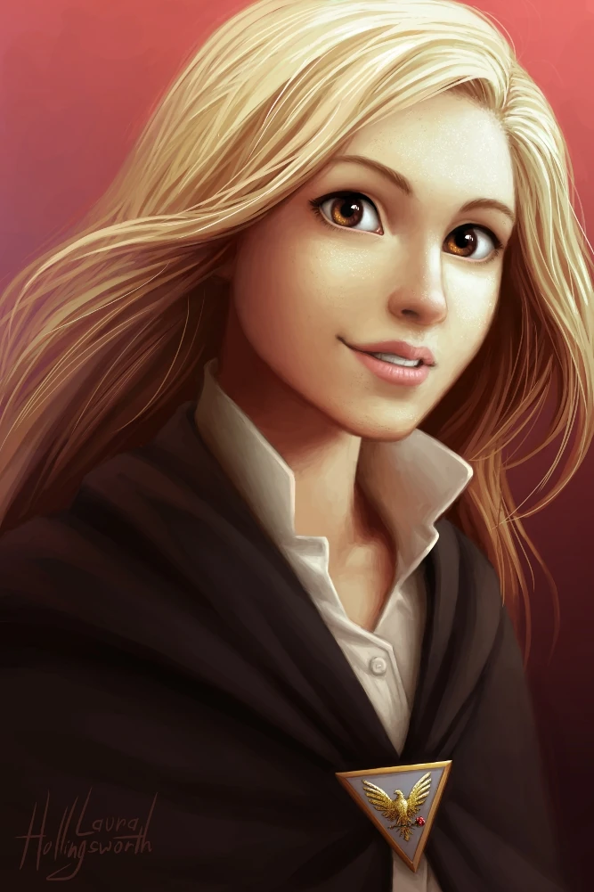
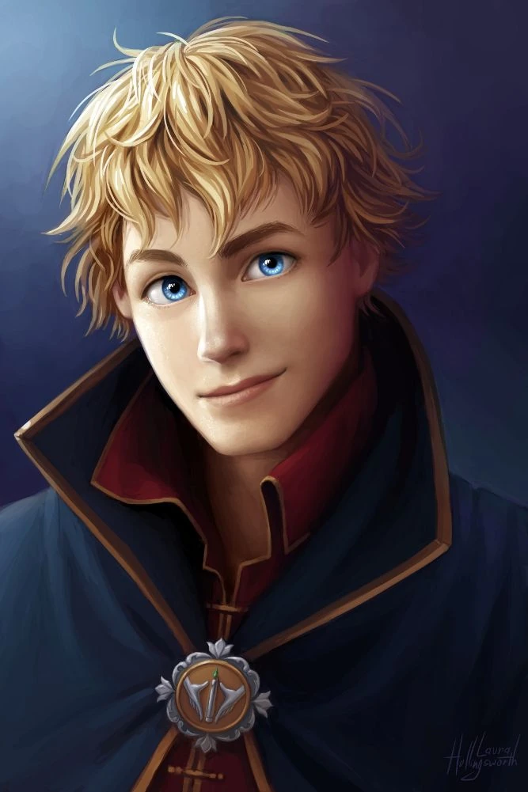
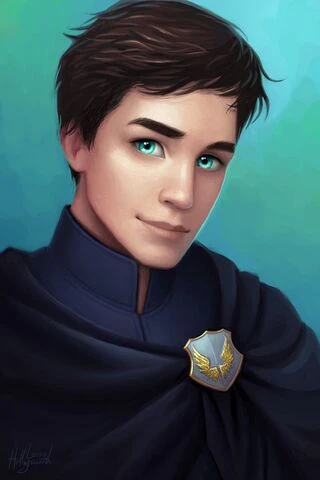
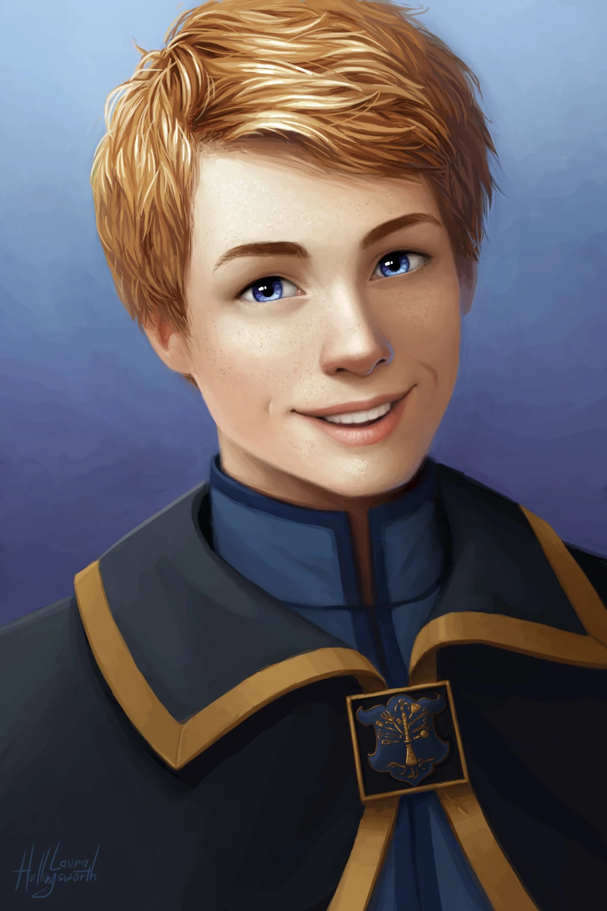
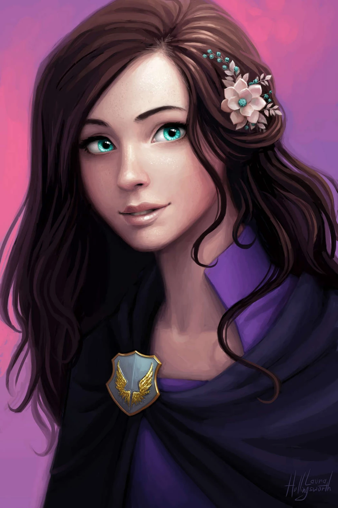

Découvrez les personnages principaux :

Sophie Foster

Keefe Sencen

Fitz Vacker

Dex Dizznee

Biana Vacker
Sophie Foster est une jeune fille dotée de capacités extraordinaires, bien au-delà de ce qu'elle pourrait imaginer. Elle découvre qu'elle est une elfe, et sa vie bascule lorsqu'elle rejoint les Cités Perdues, un monde secret où la magie et le mystère règnent. Aux côtés de ses amis fidèles, elle se lance dans des aventures palpitantes. Keefe Sencen, l'espiègle et charismatique maître des blagues, est toujours prêt à alléger l'atmosphère avec son humour, mais cache une profondeur émotionnelle qui le rend particulièrement attachant. Fitz Vacker, quant à lui, est le garçon brillant et courageux qui sert souvent de guide pour Sophie dans ce nouvel univers, même s'il lutte avec ses propres pressions familiales. Dex Dizznee, bien que parfois sous-estimé, est un génie technologique et un ami loyal sur lequel Sophie peut toujours compter. Enfin, Biana Vacker, la sœur de Fitz, passe d’une fille insouciante à une jeune femme courageuse, prête à prouver sa valeur dans des moments décisifs. Ensemble, ces cinq amis affrontent des défis colossaux, explorent des secrets enfouis et forment un lien indestructible, où la confiance et l’amitié sont essentielles pour surmonter les épreuves des Cités Perdues.